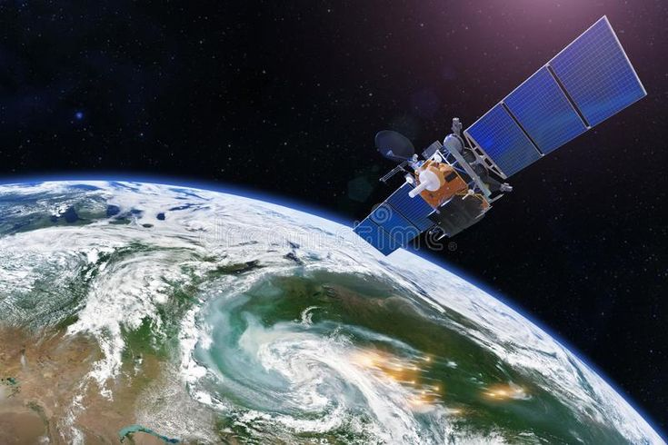
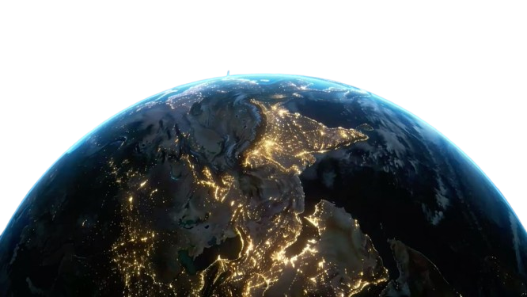
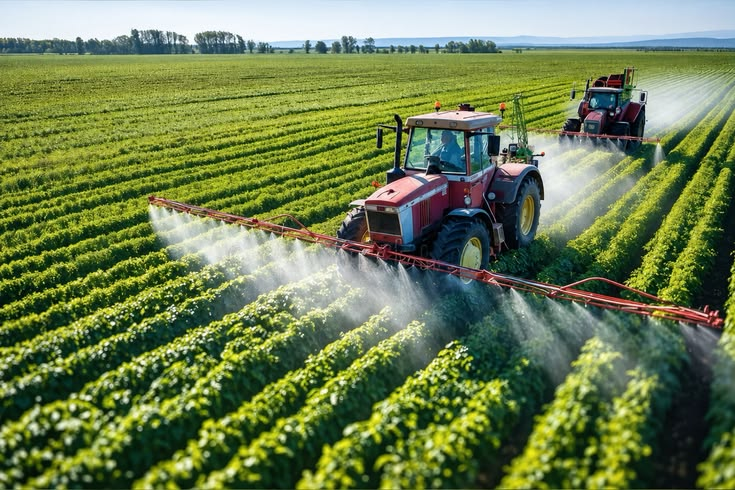
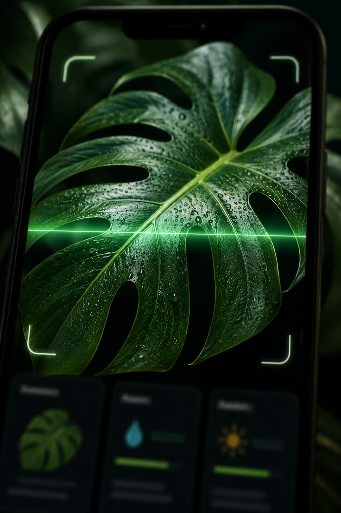

Satellite Monitoring
Get real-time data from NASA satellites about your land, weather and crops.

We turn satellite data and AI into simple actionable insights so farmers can make better decisions, protect their crops, and build a more sustainable future.

From satellite insights to AI plant analysis, Field Shift gives you the tools to understand your farm, predict risks, and improve yields.
Learn More →Get real-time data from NASA satellites about your land, weather and crops.

Turn complex data into simple recommendations and early warnings.

Explore your farm location and see environmental conditions in real time.

Upload a photo and get AI-powered crop and disease detection.

✓ HealthyBe the first to know about droughts, heat stress, and other risks.
Ethiopia's farmers face tough challenges — unpredictable weather, limited resources, and climate change. Field Shift brings global space technology and AI to local farms, helping farmers make informed decisions and increase yields.
Our Impact →
From space to your farm
for a healthier tomorrow.
Choose your farm location on our interactive map.
NASA satellite data is processed and analyzed.
Receive simple, actionable recommendations.
Turn satellite intelligence into better decisions for your farm.
Explore Dashboard →